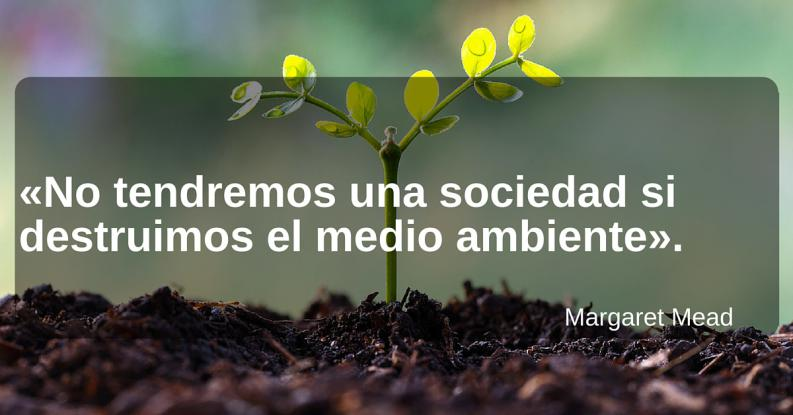

Bienvenido a nuestro sitio web donde encontraras informacion referente sobre la Sustentabilidad y Medio Ambiente
Descubre cómo podemos cuidar nuestro planeta juntos explorando nuestras páginas. Encuentra información valiosa, imágenes inspiradoras, proyectos y mucho más.
Te invitamos a explorar mas alla de nuestra pagina dando click a los "Enlaces externos" que aparecen en los apartados de cada seccion para mas informacion, Gracias por visitarnos.

Pagina creada por el equipo conformado por Cielo Herbert y Cynthia Pimentel de la especialidad de 4to A, Programacion T.V